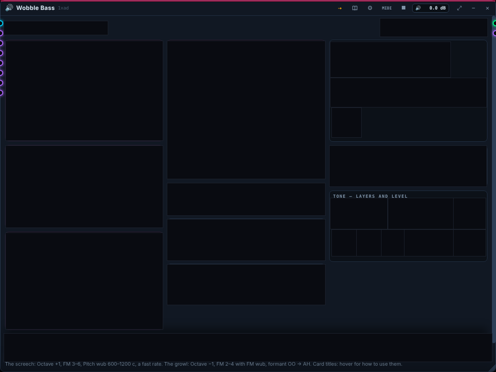
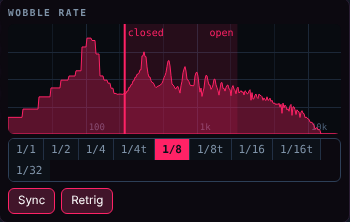
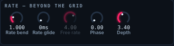
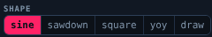
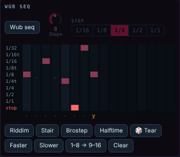
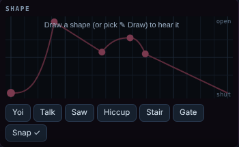
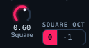
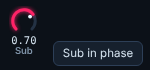
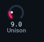
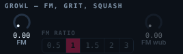
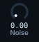
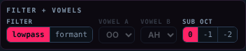
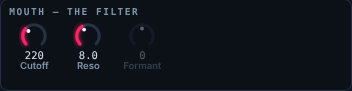
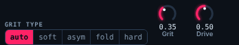
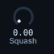
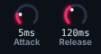
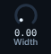
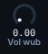
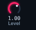
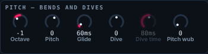
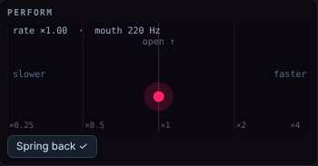
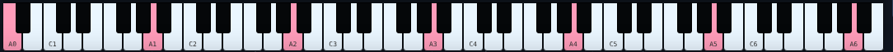
lfo · rate grid · sync ✓ builtlfo · rate bend · phase · depth ✓ builtlfo · shape ✓ builtstep-mod · wub seq ○ plannedenv-msseg · drawn shape ○ plannedosc-va · square ✓ builtosc-sub · sub ✓ builtunison-stack ✓ builtosc-fm-operator · FM ↗ comes outnoise ownfilter-formant · vowels ● in itfilter-svf · cutoff · reso ✓ builtwaveshaper · grit · drive ○ plannedclipper · squash ↗ comes outnote-release · attack · release ● in itstereo-tools · width ↗ comes outvol wub ownlevel ownpitch · bends · dives ownown:perform · XY ownpacks · presets packown:keys · every key its own note own